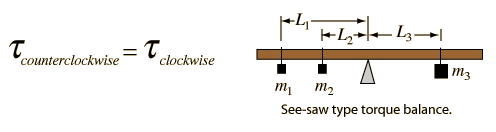

Torque Equilibrium Example

For an extended system to be at equilibrium, the sum of the torques must be equal to zero. Assuming that the beam is supported under its center of mass, it will contribute no torque. The torque equation in terms of the weights is then
After entering data above, click on the quantity you wish to calculate in the formula below. The values will not be forced to be consistent until you click on the desired quantity.
The second equation above is obtained by dividing through by g. Since g appears in every term, it can be factored out and just the products of masses and lever arms used.
|
Index
Torque equilibrium examples |